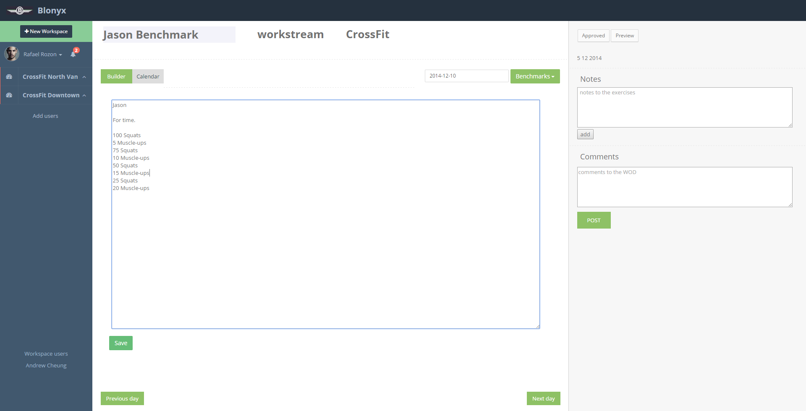
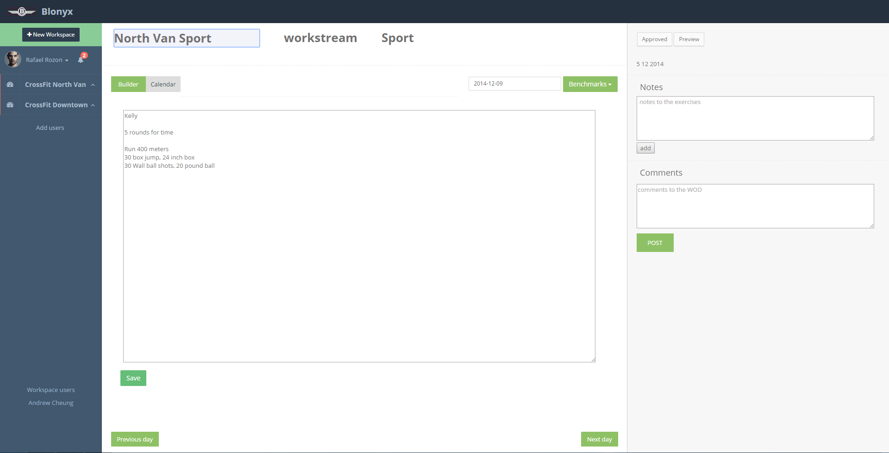
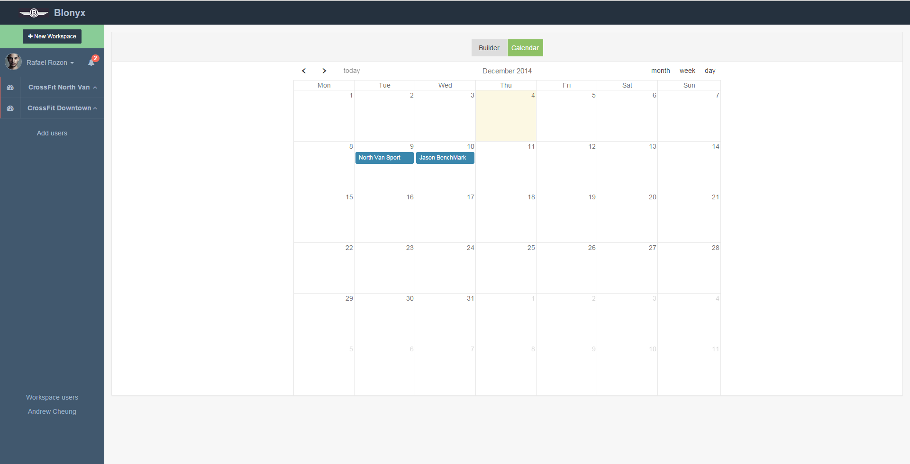
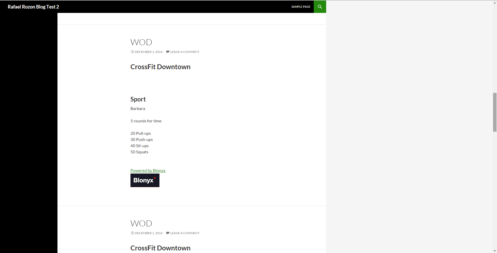

Blonyx CrossFit Scheduler is a Web Application that I have developed along with my team(Le Hagen Daz Boiz) for our COMP 3900 Computer Projects course. Our client, Blonyx, is a supplement company that sells high quality and highly researched sport supplements targeting CrossFit athletes. They wanted to develop web application that will allow CrossFit gym owners and CrossFit gym coaches to schedule WoDs (Workout of Day) ahead of time. Currently CrossFit coaches have to stay up late at night to design the WoDs for the next day. The coaches will then have to wake up early in the morning to write out the WoD on a white board where everyone will be able to see. This process gets repeated every night and every morning and it is a really inefficient and really tiring for the coaches.
We (Le Hagen Daz Boiz) proposed to develop a responsive web application that will allow coaches with a mobile device to create their WoD on the go. The coaches will be able to select the CrossFit gym that they work at and the level of the CrossFit workout between Bootcamp, Sport, and CrossFit which they can create a WoD which that will be saved and scheduled on a calendar. If the CrossFit gym has its own website, the web application can schedule a specific time and day to post the WoD to each of the CrossFit gym.
The application was developed using HTML5, CSS3, PHP, JavaScript, Ajax, MySQL, and Bootstrap.
The main page with a predefined CrossFit WoD called benchmark. The benchmark here selected is Jason and is targeted for CrossFit level.
The main page with a benchmark named Kelly. The WoD is for CrossFit North Vancouver and targets the Sport level.
Saved WoD's will be displayed on the calendar showing when it will occur.
Saving a WoD on the web application and posting it to a WordPress Blog.
